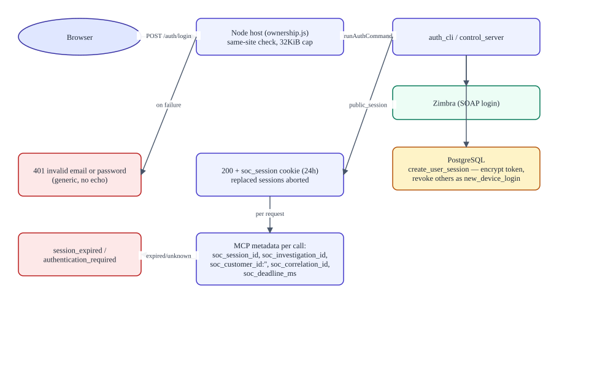
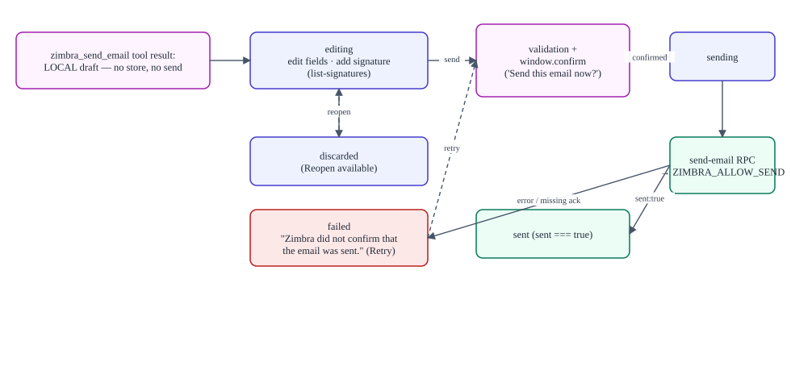

Runtime flows and the user interface
Verified against commitb26d55d274cf298a456d84edfbcb42b8dc90134b(2026-09-11T15:35:35Z) · documentation verified 2026-09-12.
Presents: RUNTIME_FLOWS.md + USER_INTERFACE_AND_ACTION_MODES.md — the Markdown files are the source of truth.
Every flow crosses the same four checkpoints: the browser (convenience), the scoped host boundary (session/ownership), the tool policy gate (allowlist + mode + per-tool state + approval), and the Python/external boundary (identity + budget + upstream gates).
Login and identity
POST /auth/login → same-site check → Python verifies credentials against Zimbra → Postgres session created with a Fernet-encrypted Zimbra token (24 h) → soc_session cookie (HttpOnly, SameSite=Lax). A new login revokes the user's other sessions (single-device policy). Failure modes: generic 401 (no password echo), session_expired (lazy deletion), upstream token death → zimbra_auth_error deletes the session and forces re-login.

A read-only Splunk request
The model calls mcp__splunk_mcp__splunk_* → host gate (read tool, auto by default) → bridge over streamable HTTP with a Bearer token (185 s timeout) → the external server applies its own guardrails → the result is sanitized (card/SSN masked) and truncated to 50 KB by the projection before entering model context. With no endpoint/token the bridge is disabled at startup and the tools never register.
Email draft → review → explicit Send

zimbra_send_email builds a local draft only — nothing stored, nothing sent, no send tool exists for the model. Delivery happens exclusively through the draft card: validation (≥1 To recipient, subject) → window.confirm('Send this email now?') → send-email RPC → control channel → ZimbraMailService.send_email (gate ZIMBRA_ALLOW_SEND) → success only on result.sent === true. A lost response after transmission surfaces as operation_outcome_unknown and is never replayed.
Full access vs SOC mode
Deployment default lives in encrypted settings (soc-action-approval); a signed-in user can override it per session from the composer menu. Full access runs every permitted tool directly (even ones marked disabled); SOC mode honors each tool's ask/auto-run/disabled state (defaults: mutations ask, reads auto). Modes never expand the allowlist — unknown names are always denied. Session overrides are in-memory and cleared on logout, revocation, or host restart.
UI areas
| Area | Component | Notes |
|---|---|---|
| Sign-in gate | AuthGate | Full-screen "Sentinel login" overlay; polls /auth/me every 30 s; password cleared after success and failure |
| Action-mode menu | SocActionPolicyMenu | Full access / SOC mode; adopts the server-confirmed value; fails closed on malformed responses |
| Draft card | EmailDraftToolview | States editing → sending → sent/failed/discarded; signature merge; explicit confirmation |
| Attachments | MarkItDown* | Picker + limits (5 files / 10 MB / 50 MB / 200 k / 500 k chars defaults); two conversion workers; truncation notice |
| Admin console | AdminConsole at /admin | Connections (status only) · Agent context (BACKGROUND cadence) · Access & approvals (per-tool checklist) · AI providers (write-only keys) |
Convenience vs enforcement: the UI never enforces. The Send confirmation dialog is a UI control; the server enforces authentication, the send gate, and Zimbra's acknowledgment. Action modes and per-tool states are enforced server-side by tools/pre-execute.
Decision tree: Action authorization diagram.